Baraja artesanal Tute IA v7
Las cuarenta caras originales y el reverso definitivo.
 1 · oros
1 · oros
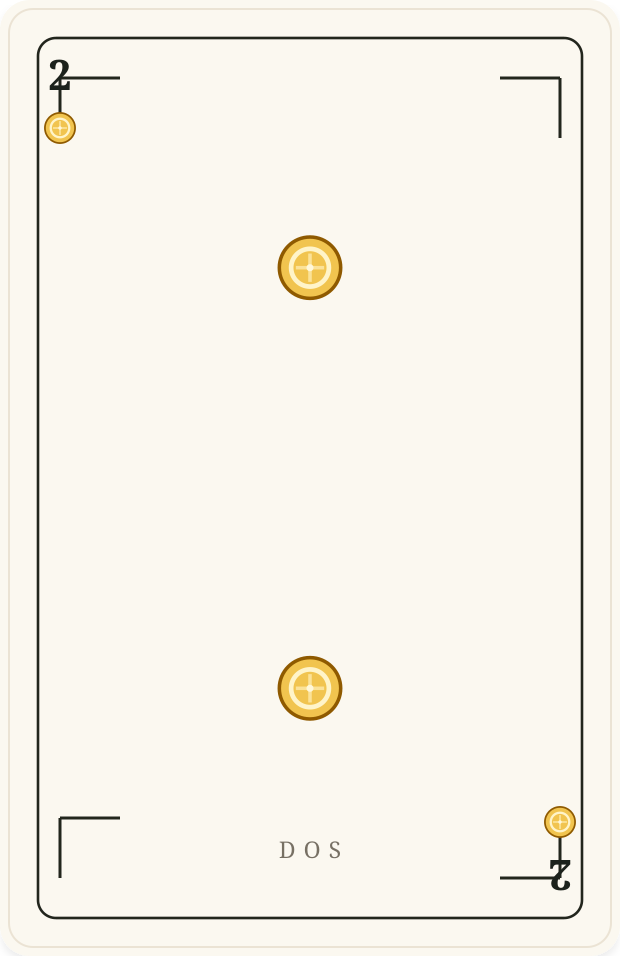
2 · oros
 3 · oros
3 · oros
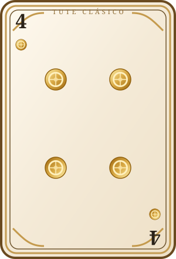
4 · oros
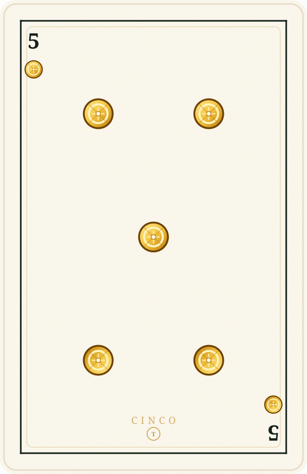
5 · oros
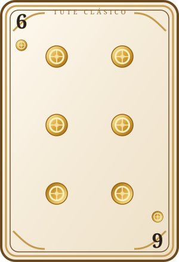
6 · oros
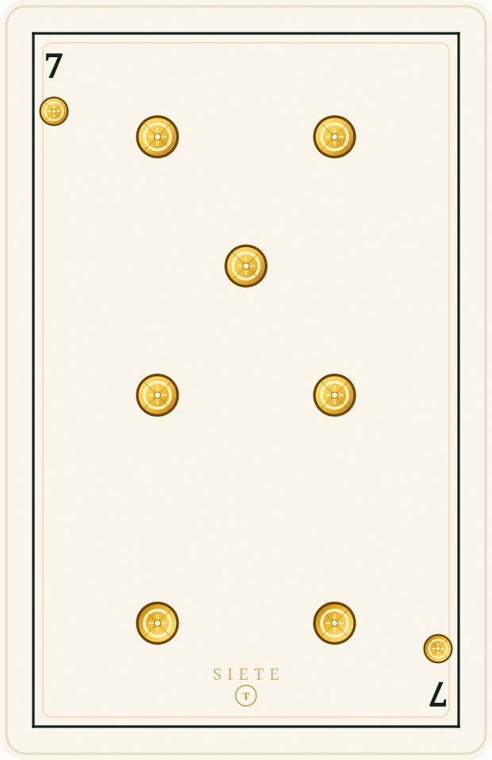
7 · oros
 10 · oros
10 · oros
 11 · oros
11 · oros
 12 · oros
12 · oros
 1 · copas
1 · copas
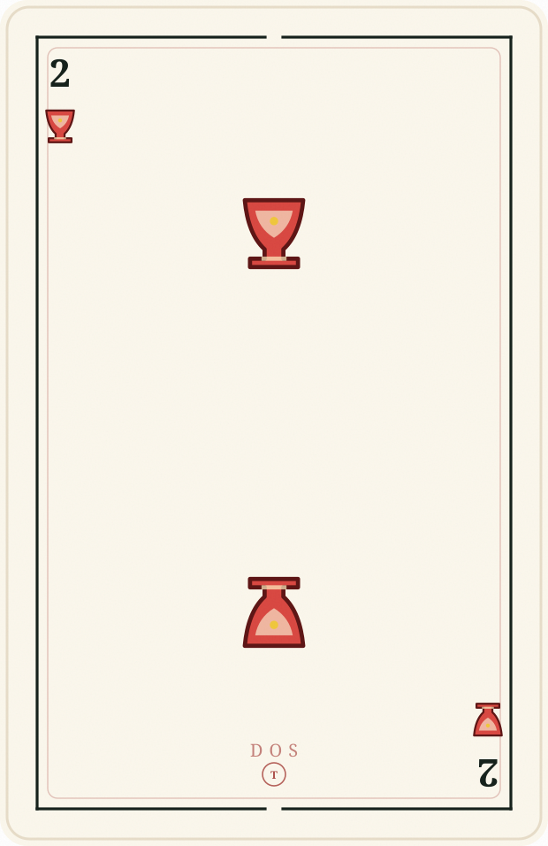
2 · copas
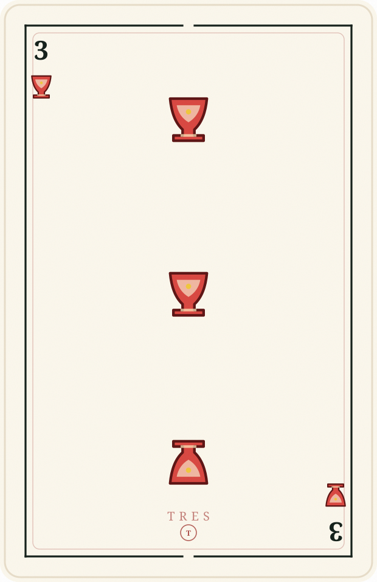
3 · copas
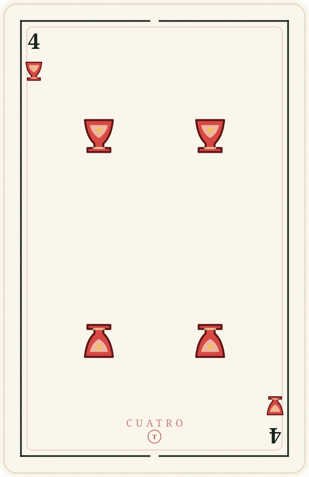
4 · copas
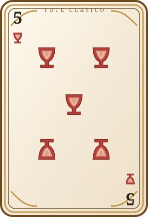
5 · copas
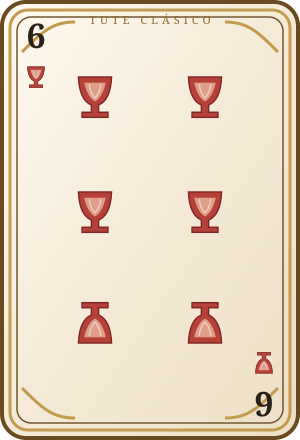
6 · copas
 7 · copas
7 · copas
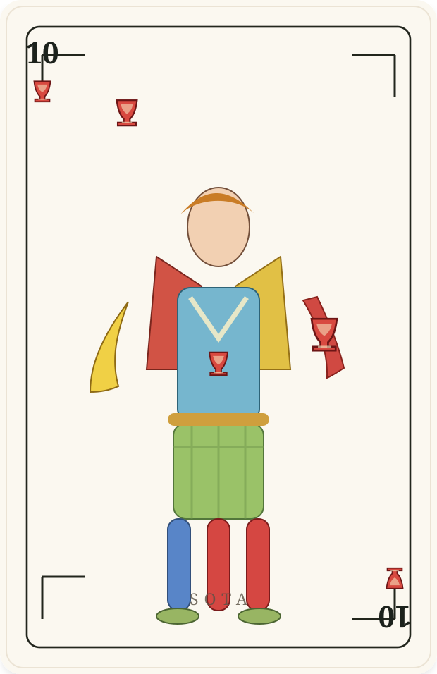
10 · copas
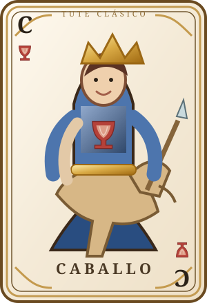
11 · copas
 12 · copas
12 · copas
 1 · espadas
1 · espadas
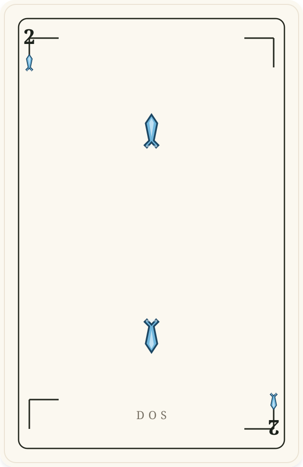
2 · espadas
 3 · espadas
3 · espadas
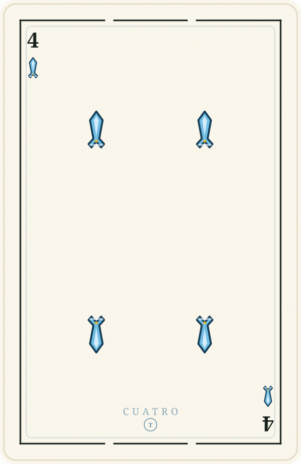
4 · espadas
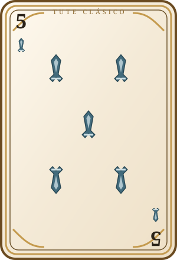
5 · espadas
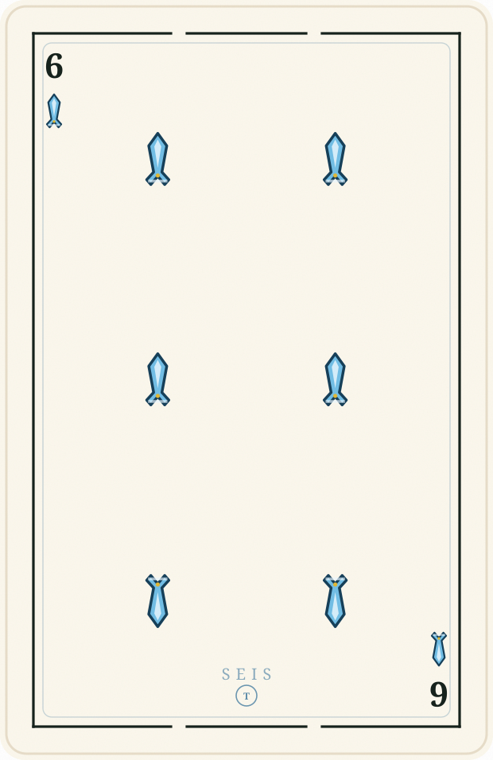
6 · espadas
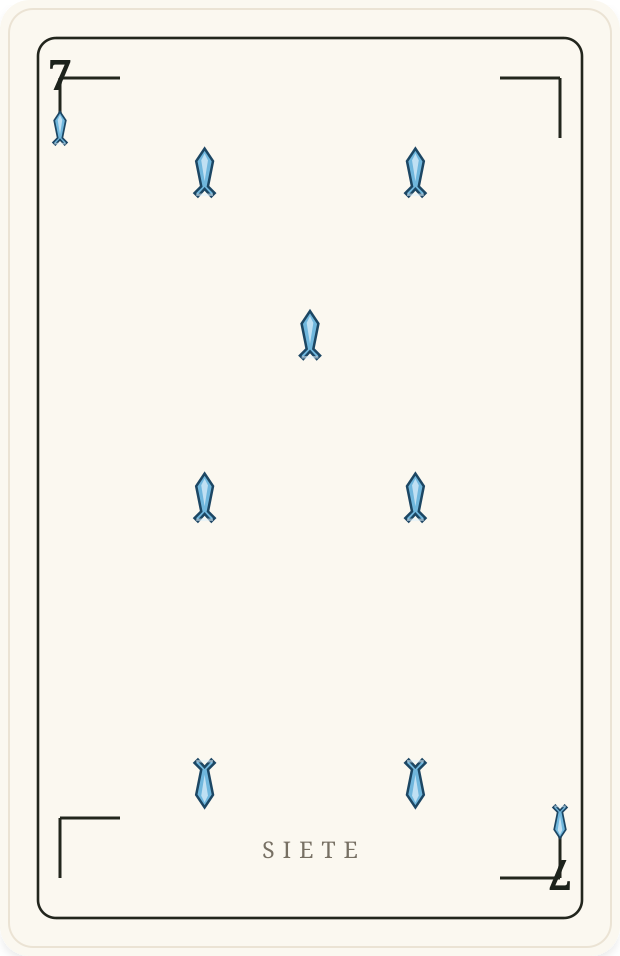
7 · espadas
 10 · espadas
10 · espadas
 11 · espadas
11 · espadas
 12 · espadas
12 · espadas
 1 · bastos
1 · bastos
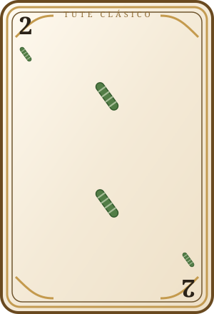
2 · bastos
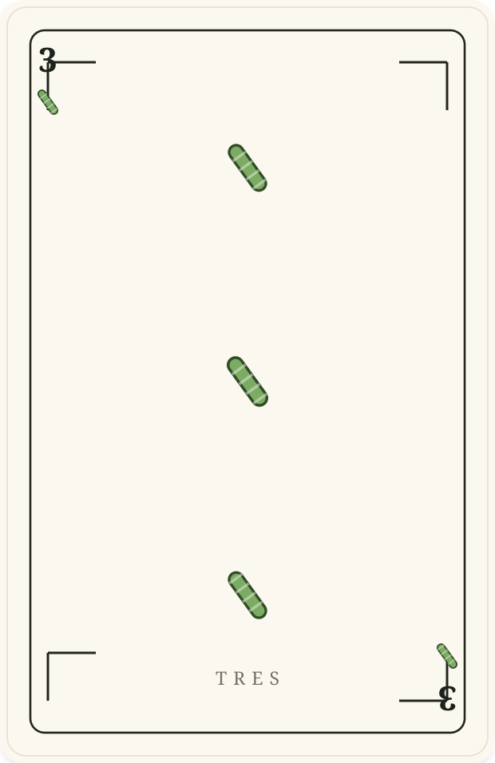
3 · bastos
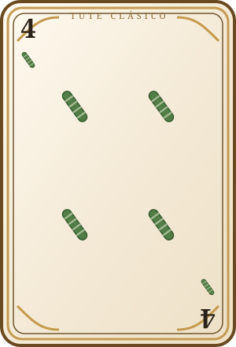
4 · bastos
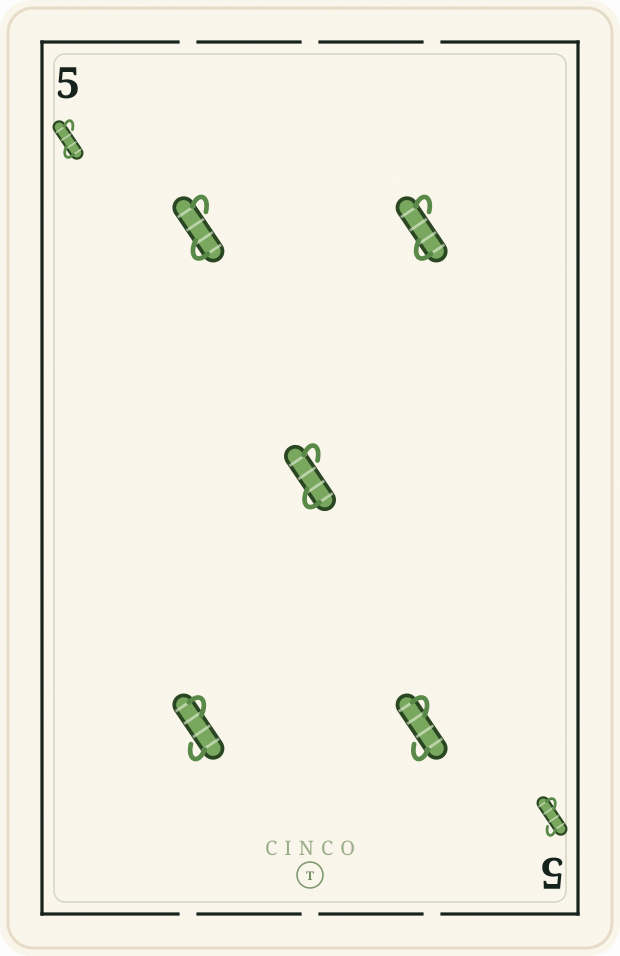
5 · bastos
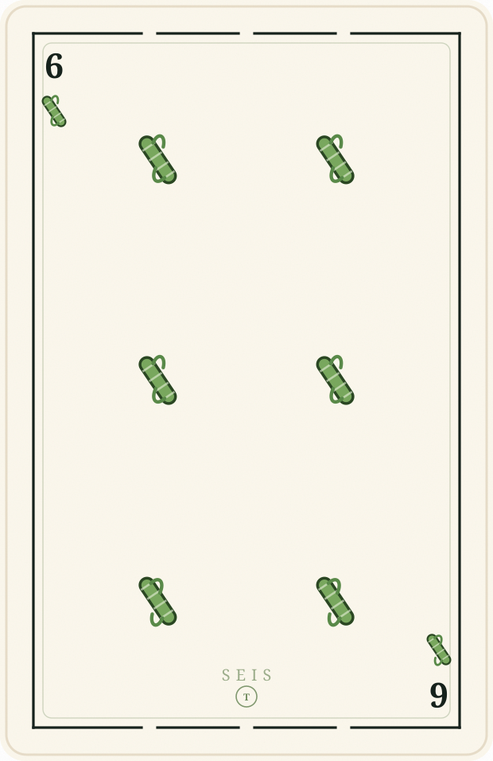
6 · bastos
 7 · bastos
7 · bastos
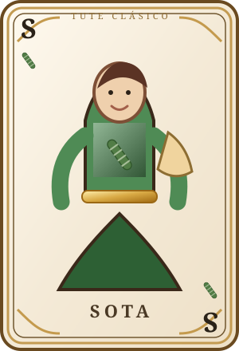
10 · bastos
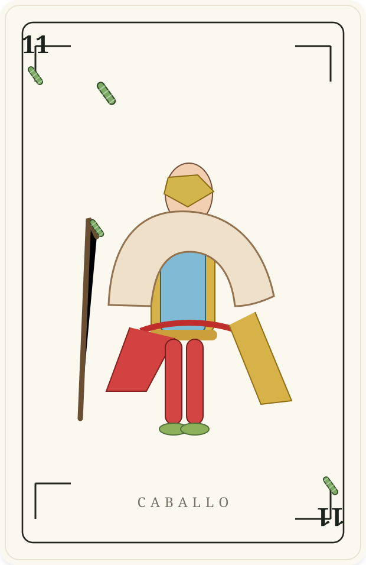
11 · bastos
 12 · bastos
12 · bastos Reverso
Reverso